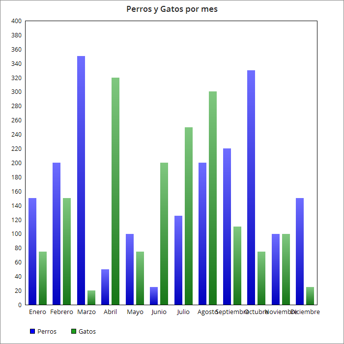

Estadisticas Recolectadas por el Censo
En este gráfico encontramos la cantidad de hogares censados por día en los ultimos 30 días.
Este gráfico de torta representa los porcentajes de los tipos de mascotas censadas hasta el momento
En este gráfico se muestra la cantidad de perros y gatos censadas por mes.
